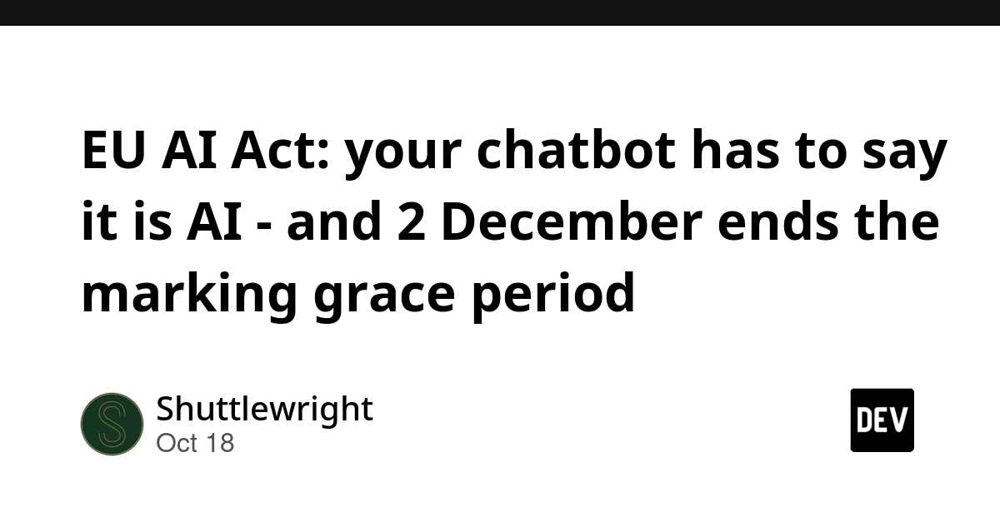
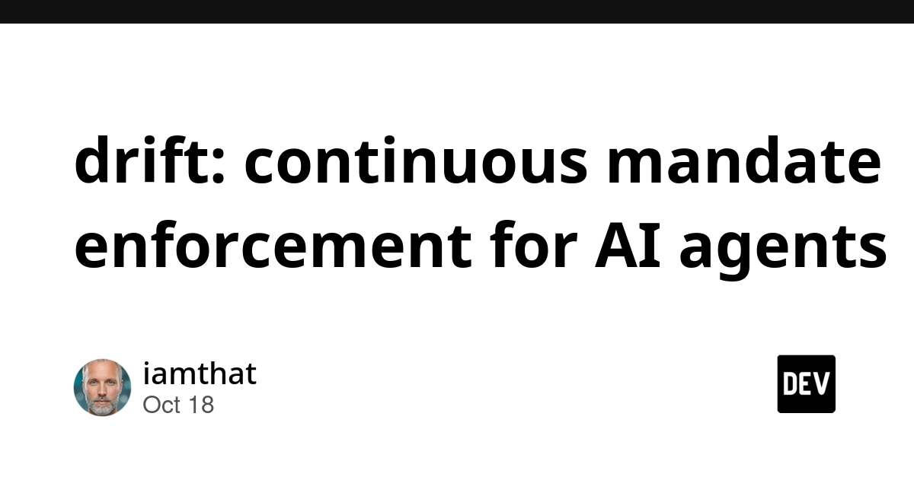
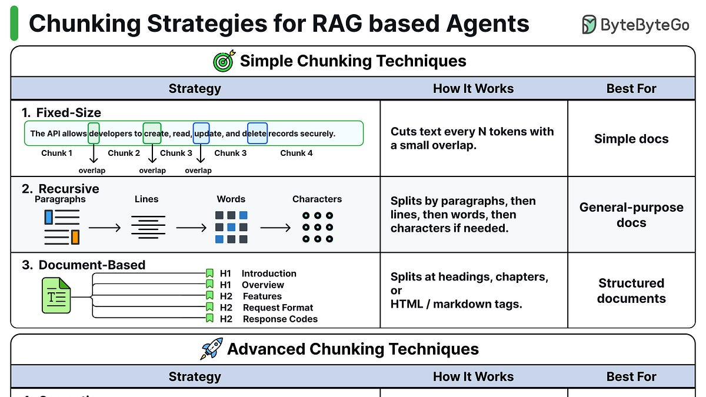
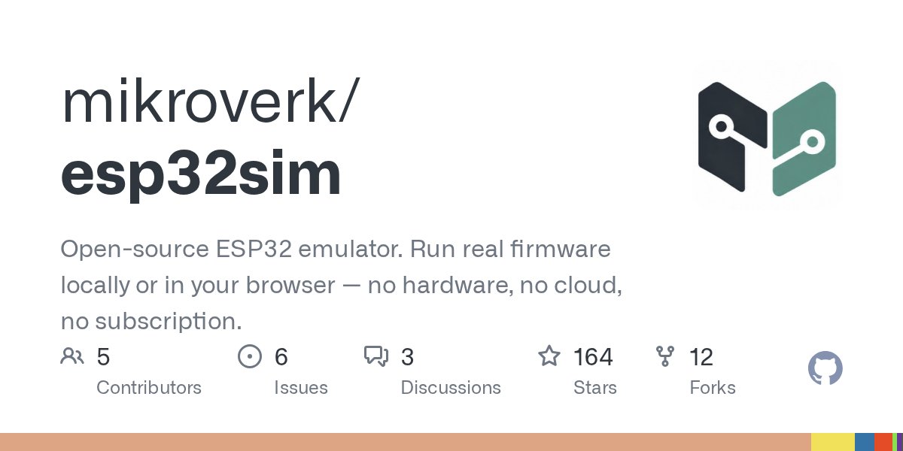

🔥 Top 3 (must read)
Ship It Weekly: GitHub Actions Lockfiles, GitLab CVSS 10 CI Flaw, Google Cloud Storage Outage & Torvalds Builds Kernel Patches With Claude Code
GitHub Actions workflow lockfiles are now in public preview. They pin actions and their dependencies to exact commits. This episode also covers three other stories. GitLab shipped a critical patch for CVE-2026-97229, a CVSS 10 regex flaw in CI/CD that could let an attacker run code on the server without logging in. Google posted its final report on two Cloud Storage incidents in us-central1, where one problem came back because of an incomplete rollback. And Linus Torvalds pushed experimental kernel patches built with Claude Code. Why it matters: It touches three of your areas in one episode: CI supply-chain safety, an incident-review lesson for SRE, and a famous developer using a coding agent for real work.
R
A skeptic's first contact with Kubernetes (2024)
An engineer who doubted Kubernetes writes about trying it for the first time. The post got good discussion on Hacker News (93 points, 53 comments). Why it matters: An honest outside view of Kubernetes helps you judge when container orchestration is worth the cost for your team.
EU AI Act: your chatbot has to say it is AI — and 2 December ends the marking grace period
Since 2 August 2026, Article 50 requires chatbots to tell EU users they are AI. It also requires a machine-readable mark on AI-generated text, image, audio and video. For systems already on the market before 2 August, the grace period for marking ends on 2 December. Why it matters: If any of your apps has an AI chat or AI-generated content for EU users, your team has about 6 weeks to ship the disclosure and marking work.

🛠 Tools & releases
Inline rendering with document.currentScript
: a small trick where an inline
<script> replaces itself with content when the page loads. It is useful for tiny dynamic bits on static pages.S
🤖 AI for developers
drift: continuous mandate enforcement for AI agents
: AP2 checks a payment agent's mandate (who to pay, how much, until when) only once, at signature time. drift keeps checking it while the agent acts. The post also points out a gap in claim checks in Google's AP2 Python SDK.

EP229: 8 Chunking strategies for RAG-based agents
: ByteByteGo compares ways to split documents before retrieval. Chunking means cutting text into pieces that the agent can search.

👔 Engineering & teams
How employment is changing at Anthropic
: an Anthropic research post on how work and jobs are changing inside the company. It is a useful reference point for how an AI-heavy team changes its roles.

🎯 For me
Ship It Weekly
CI: Try GitHub Actions lockfiles, and check your GitLab version for the CVSS 10 fix ().
R
AI adoption: Torvalds building kernel patches with Claude Code (same episode) is a strong example to share with your team.
document.currentScript trick
Web: The .
S
💡 App ideas & indie builds
Llmspeed
(HN, 258 points): it shows you how fast a local LLM would feel on a machine before you buy the hardware. The problem it solves: people spend a lot on GPUs or Macs without knowing if the speed is good enough for them. Inspiration: "try before you buy" simulators for expensive choices are a simple idea that people clearly want.

Esp32sim
(HN, 131 points): it runs ESP32 firmware in the browser. You can test microcontroller code without a physical board or a flashing setup. Inspiration: moving a hardware-bound workflow into the browser removes setup pain. This is a pattern you could use for any dev tool.

Duck audio synthesizer
(HN, 95 points): a high-quality synthesizer just for duck sounds. It is a fun, very narrow toy. Inspiration: a tiny, playful, well-made tool can still get a lot of attention.
C
🎓 Try this
GitHub Actions workflow lockfiles (public preview). Turn them on in one repo. They pin every action and its dependencies to exact commits, so an upstream change cannot quietly change your pipeline. Details: Ship It Weekly.